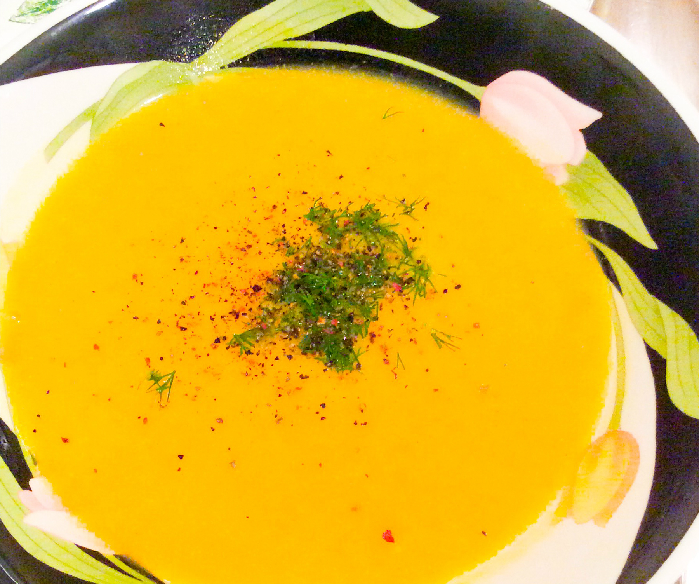

Lentil Cream Soup

Ingredients
- 2 cups dry split red lentils, rinsed
- 2 medium potatoes, peeled and diced
- 1 carrot, peeled and diced (about 1/2 cup)
- 2 garlic cloves, minced
- 1 cup milk, non-dairy (plain) or regular
- 4 cups vegetable broth or water
- 2 tbsp vegetable oil
- 1/2 tsp cumin powder
- 1/2 teaspoon curry powder
- 1 teaspoon salt or to taste
- for topping: black pepper and minced dill
Directions
- Heat oil in large pot
- Add the lentils, potatoes, carrots, and garlic. Saute for 5 minutes
- Add broth or water, bring to boil and then reduce to simmer
- Cook covered for 20- 30 minutes or until lentils become tender
- Add the cumin, curry and salt towards the end
- Puree the soup until it's creamy and smooth
- Stir in the milk and bring to boil again
- Serve and top with a bit of minced dill and crushed black pepper